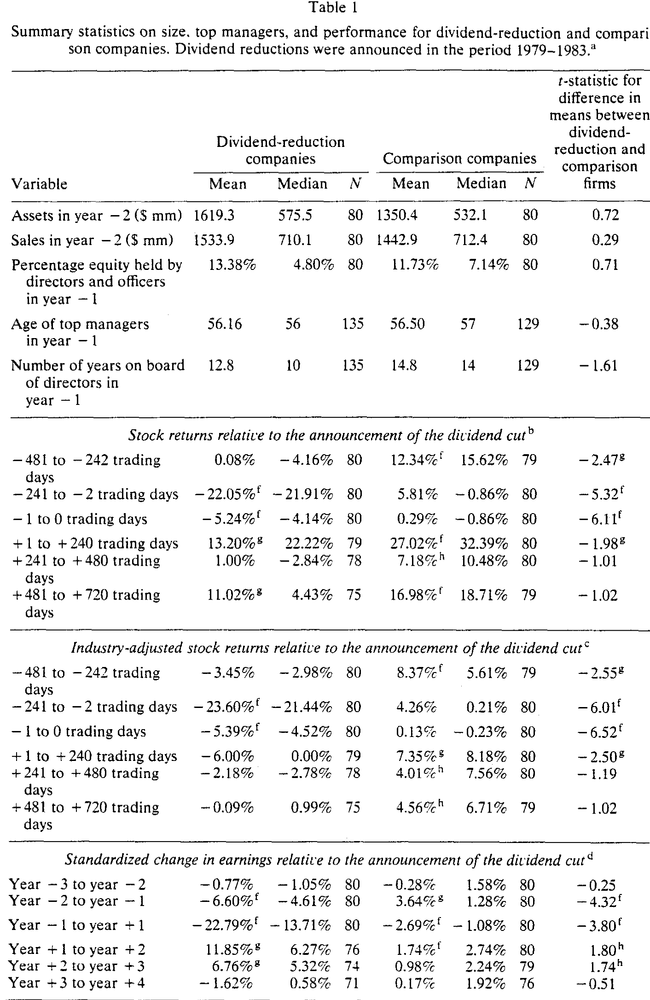
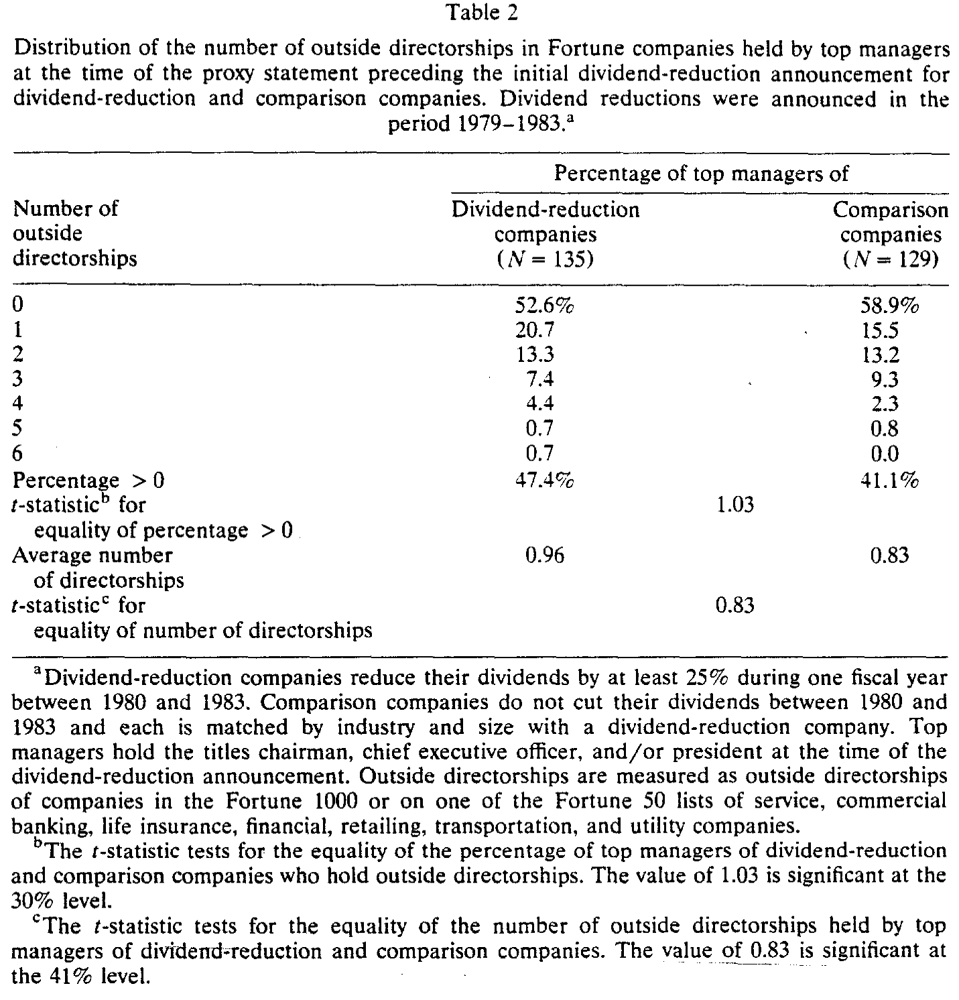
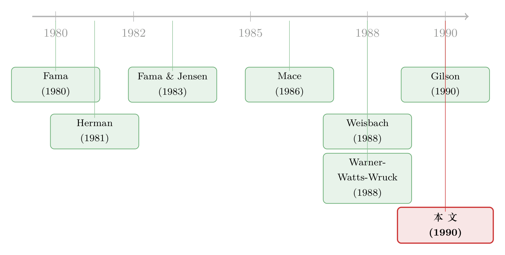

好经理的名声，是用别人家的董事会席位记账的
本文读的是 Kaplan & Reishus (1990, Journal of Financial Economics)：他们用「公司削减股利」当作业绩变差的标尺，发现削减股利公司的高管，在此后拿到新的外部董事席位的概率，比对照公司的高管低约 50%（1% 水平显著）；但「丢掉已有席位」与业绩的关系，却是负向却不显著。一句话——一个经理的市场声誉，更多写在他「能不能拿到新座位」上，而不是「会不会被踢下旧座位」。
1 一个看不见的市场
有一类东西，经济学家一直相信它存在，却始终没法直接看见——管理者劳动力市场 (managerial labor market)。
Fama (1980) 的那篇名作里有一个迷人的论断：即便股东对经理鞭长莫及，经理也不会为所欲为，因为他身处一个市场之中，这个市场会随时给他的「能力」重新标价。干得好，身价上涨；干得差，身价缩水。这套机制被认为是「分离所有权与控制权」之所以还能运转的关键之一（Fama and Jensen, 1983）。
可问题来了：身价这东西，你怎么量？一个经理今天到底「值多少」，没有一张挂在交易所里的报价单。能力本身不可观测，市场对能力的定价也藏在水面之下。于是这个理论虽然优雅，却长期停留在「应该如此」的层面，很难被钉到数据上。
Kaplan 和 Reishus 这篇 1990 年的小文章，做的就是把这块水面掀开一角。他们的整个聪明之处，可以浓缩成一句话：外部董事席位，是市场给一个经理开出的、看得见的报价单。
2 为什么是「外部董事席位」
先把这个核心想法讲透，再谈识别。
一个大公司的 CEO 去别家公司的董事会里挂个名，这件事意味着什么？两派观点。
一派——Fama (1980)、Fama and Jensen (1983)——认为外部董事是被当作监督者 (monitor) 来挑选的：好经理之所以受欢迎，是因为他更懂经营、更能替别家股东盯住那家公司的管理层。另一派——Mace (1986)、Herman (1981)——则持「董事会是摆设」的被动观点：外部董事值钱不在于他能监督，而在于他能出谋划策、能联络人脉、能给公司「撑场面」。用 Mace 的原话说，候选人「头衔与声望才是首要的」。
有意思的是，无论你信哪一派，结论都指向同一个方向：一个经理能否被请去当外部董事，正比于市场对他的评价。 监督派说，因为他能力强；摆设派说，因为他声望高、自家公司体面。两条路殊途同归——接受一份外部董事邀请，等于在市场上拿到了一次「你被同行认可了」的盖章。Mace 自己就说，高管接受外部董事职位，是为了昭示「我已被同侪接纳」，董事席位因此带来声望，也顺带拓宽视野、积累人脉、铺垫未来的机会。
于是，「外部董事席位的增减」就成了一个可观测的代理变量，去窥探那张看不见的报价单。
接着，一个自然的问题是：报价单在变，可你拿什么去触发它？ 你需要一个外生的、干净的、能把「好经理」和「坏经理」大致分开的冲击。
3 用股利削减当一把尺子
这就是本文识别策略 (identification) 的支点：用股利削减 (dividend reduction) 来度量管理者业绩。
为什么是股利，而不是股票收益或会计利润？作者给了三个理由，每一个都和「干净」二字有关。
第一，股利削减是「坏」的强信号。 削减股利通常伴随着异常糟糕的股价与盈利表现（Charest, 1978；Healy and Palepu, 1988；Ofer and Siegel, 1987）。所以「砍股利的公司」与「不砍股利的公司」之间，业绩差异是真实存在的。
第二，它是离散、可见、有日期的事件。 股利削减会被财经媒体广泛报道，有明确的公告日。这一点对设计至关重要——有了一个清晰的「分界线」，你才能干净地比较「事件前」和「事件后」各自拿到/丢掉了多少外部席位，也才能在「砍股利公司」和「对照公司」之间做横截面比较。
第三，股利是管理层自己定的。 人们普遍相信「经理会极力避免那种很可能要被反转回去的股利变动」（Marsh and Merton, 1987；亦见 Lintner, 1956；Fama and Babiak, 1968）。换句话说，砍股利等于管理层亲口承认：麻烦不是暂时的。 这让劳动力市场会格外把「砍股利」和「经营不善」联系起来。Bonnier and Bruner (1989) 给了佐证：那些既砍光股利、又盈利为负的公司，一旦宣布换高层，股价反而是正的超额反应。
具体的样本筛选是这样的：在 1980–1983 年间，按股票分拆调整后一个财年内把年度股利砍掉至少 25%、且有 CRSP 数据、属于 Fortune 大公司之列、能在《华尔街日报》索引里查到公告日的公司——满足全部条件的有 101 家。这 101 次初始削减在年份上的分布是：1979 年 3 次、1980 年 23 次、1981 年 14 次、1982 年 49 次、1983 年 12 次。
但真正关键的一步，是配对。
4 给每家「坏公司」找一个「好双胞胎」
只看砍股利公司本身没用，因为外部董事席位的多寡，本就受行业、公司规模这些外生因素影响——如果外部董事是冲着「行业专长」被挑中的，那不同行业的经理，机会本就不一样。Herman (1981) 就发现，百大工业企业里超过三分之一的外部董事，来自与本公司有业务往来的公司。
所以作者为每家砍股利公司，匹配一家同行业、同规模、但没砍股利的对照公司：两位数（尽量到三、四位数）SIC 行业代码相同；在削减前第二个财年（year −2）净资产差距不超过 50%；1980–1983 年间没削减过股利。最终 101 家里匹配上了 80 对。这 80 家砍股利公司有 135 位最高管理者，80 家对照公司有 129 位（「最高管理者」定义为在削减公告时持有董事长、CEO 或总裁头衔的人）。
为什么用 year −2 而不是 year −1 的资产来配？因为削减前一年公司可能已经业绩崩坏、资产被压低，用 −2 年能避免这种「向下偏」的污染。这是个很细但很要紧的处理。
配对得好不好，看表 1 就知道：两组公司在非业绩特征上几乎一模一样。砍股利公司 year −2 的平均资产 $1,619 百万、销售 $1,534 百万；对照公司是 $1,350 百万和 $1,443 百万。董事与高管持股比例 13.4% 对 11.7%，高管平均年龄都约 56 岁，在自家董事会任职年限 12.8 年对 14.8 年（t = −1.61，不显著）。两组里都有超过 88% 的经理在自家董事会待了至少两年。所有这些非业绩变量的均值/中位数差异，没有一个统计显著。

Table 1
而在业绩上，两组则泾渭分明。削减公告前 −241 到 −2 个交易日里，砍股利公司的平均股票收益是 −22.05%，对照公司是 +5.81%（t = −5.32）；做了行业调整后是 −23.60% 对 +4.26%（t = −6.01）。公告当日附近（−1 到 0 日）更刺眼，−5.24% 对 0.29%（t = −6.11）。盈利也一样：标准化盈利变化从 year −1 到 year +1，砍股利公司是 −22.79%，对照公司只有 −2.69%（t = −3.80）。
一句话——配对让两组公司在所有「无关变量」上对齐，只在「业绩」这一个维度上拉开。由于超过 88% 的经理在削减时已在自家董事会任职至少两年，把「公司业绩」当作「经理被感知的能力」的正相关代理，是站得住脚的。
5 反转：得到，比失去更说明问题
铺垫到这里，主结果就呼之欲出了。
第一个结果，也是标题里那个： 砍股利公司的高管，在削减后拿到新增外部董事席位的概率，比对照公司高管低约 50%，在 1% 水平显著。当作者改用行业调整后的股票收益来度量业绩、并跑多元 logit 回归时，结论依旧成立；而且在控制了「期初已持有的外部席位数」「本人在自家公司的持股」「在自家董事会的任职年限」之后，业绩与新增席位之间的关系依然存在。
这正是 Fama 那张「看不见的报价单」第一次被拍到了照片：业绩差的经理，市场对他的报价确实被下调了——下调的方式，就是少给他递董事会的橄榄枝。
接着，一个自然的反问是：那「丢席位」呢？业绩差的经理，是不是也更容易被原有的董事会踢出去？
这里出现了真正的反转——几乎没有。 高管从已持有的外部董事会辞职或被剔除的概率，与本公司业绩负相关，但不显著。事实上，四年之后，两组公司里都有超过 80% 的高管仍然牢牢守着他们的外部董事席位。看表 2 也是同样的故事：在基准代理声明日（year −1），砍股利公司高管里有 47.4% 至少持有一个 Fortune 公司的外部席位，对照公司是 41.1%，差异不显著（t = 1.03）；人均持有 0.96 对 0.83 个（t = 0.83，同样不显著）。

Table 2
于是这篇论文真正的、可以反复咀嚼的一句话浮出水面：
声誉是「不对称」的。一个经理的名声，更强地决定了他能不能拿到新座位，却很弱地决定他会不会丢掉旧座位。座位一旦坐上，就很黏。
为什么会这样？一个直觉是：把一个人请进董事会是一次主动的「定价」决策，市场会认真掂量他此刻的身价；但把一个已经在场的董事赶走，成本高、得罪人、还要承认当初看走了眼——除非业绩烂到 Gilson (1990) 笔下那种破产重整的地步，董事会通常懒得动手。（关于业绩差的经理在外部劳动力市场里如何被重新标价，可参见《好表现，是一张能跳槽的入场券——而它只对「大人物」生效》。）
6 内部那把刀，比外部锋利得多
文章还顺手做了一个漂亮的对照：把视线从「别人家的董事会」收回到「他自己家的董事会」。
结果是：砍股利公司的经理，到削减后第三份年度代理声明时，放弃董事长或总裁头衔的概率是对照公司经理的 3 倍，丢掉自家公司董事席位的概率更是超过 6 倍。换句话说——
业绩对一个经理「在自家公司的去留」的影响，明显强于对他「外部董事席位增减」的影响。
这和内部劳动力市场的既有证据是一致的（Warner, Watts, and Wruck, 1988；Weisbach, 1988）：业绩差的经理更容易在自己公司里丢饭碗、丢席位，说明他们更可能是被「赶」下台的。（关于「炒掉经理之后公司到底有没有变好、还是只是运气回归」，可参见《炒掉一个 CEO 之后，公司真的变好了吗》。）
把内、外两把尺子叠在一起看，一幅完整的图景出现了：惩罚主要发生在内部（你会被自家董事会处理），而外部市场更像一个「锦上添花」的奖励机制（干得好就多给你座位，干得差就少给，但很少倒过来抢你的）。
7 一个作者自己都承认的软肋
这篇文章最让我欣赏的，是它对自己识别的诚实。
「业绩差的经理少拿到外部席位」这个事实，至少有两种解释，而本文的数据无法区分：
- 解释一（需求侧）：市场不那么想要他了。要么因为他能力被怀疑（监督派），要么因为他声望受损、自家公司不再体面（摆设派）。
- 解释二（供给侧）：他自己没空。业绩差的公司要救火，经理得把时间花在自家烂摊子上，自然就少接外部董事的活儿了。
为什么分不清？因为作者度量的是接受的（accepted）席位，而不是被提供的（offered）席位。一个经理少了一个外部董事头衔，你看不出究竟是「没人请他」还是「他自己推掉了」。作者很坦白：现实里两种因素大概都在起作用。
这个 caveat 非但没削弱文章，反而让它的核心结论更稳——因为无论哪种解释成立，「一个经理的市场价值正比于自家公司业绩」这一点都成立：要么是别人这么给他定价，要么是他自己的时间这么稀缺。两条路，仍然殊途同归。
8 文献脉络
把这篇论文放回它所在的那条线上，故事会更清楚。
最上游，是 Fama (1980) 提出的「管理者面对一个外部劳动力市场、市场会用 ex post settling up 来约束经理」的思想，以及 Fama and Jensen (1983) 关于所有权与控制权分离、外部董事作为监督装置的论述——这是整套理论的源头。与之并行的，是 Mace (1986) 和 Herman (1981) 基于访谈与机构观察、对董事会「被动论」的刻画：董事值钱在声望而非监督。

到了 1980 年代末，这条线开始「实证化」。一支力量从内部劳动力市场切入——Warner, Watts, and Wruck (1988) 和 Weisbach (1988) 发现业绩差的公司更容易换掉高层、更换董事。另一支从财务困境切入——Gilson (1990，与本文同卷）发现，离开困境公司董事会的董事，三年后手里的董事席位少了约三分之一。
Kaplan and Reishus (1990) 恰好补上了中间那一块：既不是「内部去留」，也不是「破产级别的极端困境」，而是用温和但清晰的业绩信号（砍股利），去丈量外部董事市场如何为一个经理的声誉定价。把三组公司排个序——Gilson 的财困公司最差、本文的砍股利公司居中、本文的对照公司最好——三组经理在外部市场的「受欢迎程度」恰好同序递增，内部换手率也同序，相互印证。
9 评论与延伸（Q&A + 研究方向）
(a) 几个可能的疑问
Q：用「砍股利」当业绩尺子，会不会太糙？
会有噪声，作者自己也承认这是「admittedly noisy」的度量。但它换来了三个别的尺子给不了的好处：强信号（伴随异常差的股价/盈利）、离散可定日（能做前后比较）、且由管理层亲自做出（市场会把它读成「麻烦不是暂时的」）。而且作者用行业调整股票收益做稳健性检验，结论不变。糙，但够用，且方向不偏。
Q：那 50% 到底是「市场嫌弃他」还是「他自己太忙」？
这正是本文最大的识别软肋，作者也明说分不清——因为度量的是「接受的席位」而非「被提供的席位」。但关键在于：两种解释都支持「经理市场价值 ∝ 自家业绩」这个核心命题，只是机制不同（需求下降 vs 时间稀缺）。结论的方向因此是稳的，能被掏空的只是机制解释。
Q：为什么「得到」显著、「失去」不显著？这不会自相矛盾吗？
不矛盾，反而是本文最有意思的发现。把人请进董事会是一次主动定价，市场会认真给当下身价标价；把已在场的董事赶走则成本高、要承认看走眼，董事会通常懒得动手——除非烂到破产重整（Gilson 那种）。所以席位「易得难失」，声誉一旦兑现成座位就很黏。四年后两组都有超过 80% 的人守住了外部席位。
Q：配对样本可信吗？会不会对照公司本身就很特殊？
作者明确说对照公司不是「典型公司」的随机样本——它们是被刻意挑成「除了业绩更好，其余都像砍股利公司」的影子。同行业（控制行业层面的董事机会）、同规模（控制规模相关的机会）、且非业绩变量在表 1 里全部不显著。这种「只在业绩一个维度上拉开」的设计，正是它干净的地方。
Q：这和 Weisbach (1988) 研究的内部董事会，有什么不同？
Weisbach 研究的是内部劳动力市场——业绩差时 CEO 会不会被自家董事会换掉。本文同时看了内部（自家头衔/席位的丢失，3 倍、6 倍）和外部（别家董事会席位的增减）。本文的独特贡献，是把外部董事席位当成可观测的「市场报价单」，去照亮 Fama (1980) 那个一直难以实证的外部劳动力市场。
Q：对 Jensen 的自由现金流/代理理论意味着什么？
它提供了一个微观的「settling up」证据：即使股东直接约束有限，经理也会因业绩差而在外部市场被悄悄降价（少给座位）。这给「市场约束经理」的链条补了一环。不过本文也提醒：外部惩罚其实相当温和（很少真把人赶走），真正硬的约束还在内部。
(b) 几个可能的研究问题与提案
1. 用现代数据 + 信用事件重做这把「报价单」
【经济故事】本文受限于 1980 年代手工翻代理声明的样本（80 对公司）。今天有 BoardEx 这样的董事网络数据库，可以把「业绩冲击」换成更外生的信用事件——评级下调、债务契约违约 (covenant violation)、信用利差跳升——再看高管随后的外部董事席位增减。机制更干净，样本量大几个数量级。 【可行性】高。BoardEx + Compustat + 评级数据皆可得；covenant violation 可用 DealScan / 文本提取。识别上可用「擦边触发评级下调」做断点。
2. 声誉好的董事，能不能压低发行人的信用利差？
【经济故事】本文说市场用「席位」给经理的声誉定价。反过来问：当一位声誉好（自家公司业绩好）的高管加入某公司董事会，那家公司的债券会不会因此被定价得更便宜？这把「董事声誉」从股权监督延伸到信用市场——债权人也许比股东更在乎董事会的质量。 【可行性】中。需要董事任命事件 + 发行人二级市场债券利差（TRACE）做事件研究，难点是任命的内生性（好董事也挑好公司），需用外生离职（去世、到龄退休）做工具。
3. 困境公司董事的「席位传染」与信用市场
【经济故事】Gilson (1990) 发现离开困境公司的董事会少拿三分之一席位。可把它延伸：当一位董事所在的某家公司爆发信用事件，他在其他公司董事会的席位是否也松动？这是一条经由「人」而非「业务」的传染链，且可观测。 【可行性】中。需要董事-公司面板 + 公司层面信用事件；识别上要小心区分「这位董事本就差」与「被一家公司的事件殃及」，可用同一董事跨多家公司的固定效应设计。
4. 把「不对称」做成正式的门槛检验
【经济故事】本文最迷人的发现是「易得难失」。但它只是描述性的。可以建一个结构化的「席位去留」门槛模型：业绩要差到什么程度，外部董事会才真的动手赶人？把这个门槛估出来，并看它如何随董事市场紧俏程度、公司治理强度变化。 【可行性】中偏低。需要长面板 + 较强的结构假设；好处是能把「黏性」量化成一个可解释的门槛参数。
10 我的判断
这篇论文的贡献，不在于它的统计有多复杂——它的主力武器不过是均值比较和 logit 回归——而在于它的度量创意：把「外部董事席位的增减」变成 Fama (1980) 那个抽象劳动力市场的、可观测的价签，再用「砍股利」这把离散、可定日、由管理层亲手做出的尺子去触发它。一个好的实证设计，往往就赢在「找到了一个能把无形变量拍成照片的代理」。而它最有价值的发现——声誉「易得难失」的不对称——直到今天读来仍然新鲜。
对识别，我有两点保留。其一是作者自己点破的「accepted vs offered」：少一个席位，分不清是没人请还是自己推，这让机制解释始终悬而未决（虽然不影响核心命题的方向）。其二是样本的体量与年代——80 对公司、手工采集、1980 年代初的治理生态，外部董事市场的供需结构、女性与多元化要求、独立性规范都与今天大不相同，外推需谨慎。
后续我最想看到的，是把这套「席位即报价单」的思路搬到信用市场：当一个经理（或一位董事）的声誉因信用事件而受损，债权人——这群往往比股东更挑剔的监督者——会不会比股权市场更快、更狠地重新定价？那将是对 Fama 这条老线的一次很有意思的延伸。
参考文献
- Bonnier, K. and Robert Bruner (1989). An analysis of the stock price reaction to management change in distressed firms. Journal of Accounting and Economics 11, 95–106.
- Charest, Guy (1978). Dividend information, stock returns and market efficiency — II. Journal of Financial Economics 6, 297–330.
- Fama, Eugene (1980). Agency problems and the theory of the firm. Journal of Political Economy 88, 288–307.
- Fama, Eugene and H. Babiak (1968). Dividend policy: An empirical analysis. Journal of the American Statistical Association 63, 1132–1161.
- Fama, Eugene and Michael Jensen (1983). Separation of ownership and control. Journal of Law and Economics 26, 301–325.
- Gilson, Stuart (1990). Bankruptcy, boards, banks, and blockholders. Journal of Financial Economics 27.
- Healy, Paul and Krishna Palepu (1988). Dividend initiations and omissions as earnings signals. Journal of Financial Economics 21, 149–176.
- Herman, Edward (1981). Corporate Control, Corporate Power. Cambridge University Press, New York.
- Kaplan, Steven N. and David Reishus (1990). Outside directorships and corporate performance. Journal of Financial Economics 27, 389–410.
- Lintner, John (1956). Distribution of incomes of corporations among dividends, retained earnings and taxes. American Economic Review 46, 97–113.
- Mace, Myles (1986). Directors: Myth and Reality. Harvard Business School Press, Boston.
- Marsh, Terry and Robert Merton (1987). Dividend behavior for the aggregate stock market. Journal of Business 60, 1–40.
- Ofer, Aharon and Daniel Siegel (1987). Corporate financial policy, information and market expectations: An empirical investigation of dividends. Journal of Finance 42, 889–912.
- Warner, Jerrold, Ross Watts, and Karen Wruck (1988). Stock prices, event prediction and event studies: An examination of top management restructurings. Journal of Financial Economics 20, 461–492.
- Weisbach, Michael (1988). Outside directors and CEO turnover. Journal of Financial Economics 20, 431–460.